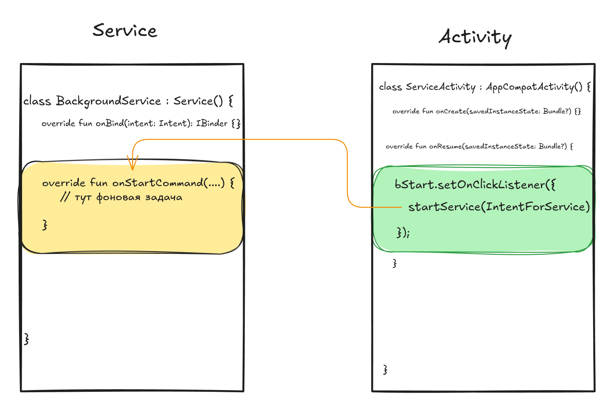

Запуск задачи в фоновом режиме (Background)
Пример реализации можно посмотреть:
Service
Service — это компонент приложения, который может выполнять длительные операции в фоновом режиме. Он не предоставляет пользовательский интерфейс. После запуска служба может продолжать работу в течение некоторого времени, даже после того, как пользователь переключится на другое приложение. Кроме того, компонент может привязываться к службе для взаимодействия с ней и даже выполнения межпроцессного взаимодействия (IPC). Например, служба может обрабатывать сетевые транзакции, воспроизводить музыку, выполнять файловый ввод-вывод или взаимодействовать с поставщиком контента — и все это в фоновом режиме.
Создание класса сервиса осуществляется след. образом:

Далее, Android Studio создас новый класс (назовете его сами в открывшемся окне):
class BackgroundService : Service() {
override fun onBind(intent: Intent): IBinder {
TODO("Return the communication channel to the service.")
}
}
Также, добавится поле в AndroidManifest-файле:
<service
android:name=".services.BackgroundService"
android:enabled="true"
android:exported="true"></service>
Класс Service является базовым классом для всех сервисов. При расширении этого класса важно создать новый поток, в котором служба сможет выполнить всю свою работу; служба по умолчанию использует основной поток вашего приложения, что может замедлить производительность любого действия, выполняемого вашим приложением.
Запуск сервиса
Запущенная служба — это служба, которую другой компонент запускает путем вызова startService() , что приводит к вызову метода onStartCommand() службы.
Когда служба запускается, ее жизненный цикл не зависит от компонента, который ее запустил. Служба может работать в фоновом режиме неограниченное время, даже если компонент, запустивший ее, уничтожен. Таким образом, служба должна остановить себя после завершения своей работы, вызвав stopSelf() , или другой компонент может остановить ее, вызвав stopService() .
Компонент приложения, такой как активность, может запустить службу, вызвав startService() и передав Intent , который определяет службу и включает любые данные, которые служба может использовать. Служба получает это Intent в методе onStartCommand().

Добавляем запуск и остановку сервиса:
class BackgroundService : Service() {
val LOG_TAG: String = "BG_SERVICE"
override fun onBind(intent: Intent): IBinder {
TODO("Return the communication channel to the service.")
}
override fun onStartCommand(intent: Intent, flags: Int, startId: Int): Int {
for (i in 0 until 1000) {
Log.d(LOG_TAG, "Task running: $i")
}
return START_STICKY
}
override fun onDestroy() {
super.onDestroy()
Log.d(LOG_TAG, "Service destroyed")
}
}
Добавляем запуск и остановку сервиса из Activity при помощи Intent:
private lateinit var bStart : Button
private lateinit var bStop : Button
...
...
bStart.setOnClickListener({
val startBgIntend = Intent(this, BackgroundService::class.java)
startService(startBgIntend)
});
bStop.setOnClickListener({
val stopBgIntend = Intent(this, BackgroundService::class.java)
stopService(stopBgIntend)
});
В даной реализации нюанс заключается в том, что операционная система Android остановит ваш сервис, если мы свернем приложение или переключимся на другое.
Оборачиваем выполнение задачи в Корутины
Про корпутины почитать можно здесь.
Реализация с корутинами:
class BackgroundService : Service() {
val LOG_TAG: String = "BG_SERVICE"
private val serviceJob = Job()
private val serviceScope = CoroutineScope(Dispatchers.IO + serviceJob)
override fun onBind(intent: Intent): IBinder {
TODO("Return the communication channel to the service.")
}
override fun onStartCommand(intent: Intent, flags: Int, startId: Int): Int {
serviceScope.launch {
// Здесь тяжелая задача
// 1. Обновляем Location, CellInfo
// 2. Передаем через сокеты данные на backend-сервер
for (i in 0 until 1000) {
delay(1000)
Log.d(LOG_TAG, "Task running: $i")
}
stopSelf()
}
return START_STICKY
}
override fun onDestroy() {
super.onDestroy()
serviceJob.cancel()
Log.d(LOG_TAG, "Service destroyed")
}
}
Передача данных из Service в Activity
Broadcast Receiver
Для примера мы будем использовать BroadcastRceiver-класс. Важно отметить, что фильтрация сообщений Intent осуществляется по ключевому слову: IntentFilter("BackGroundUpdate"), можно добавить любое свое.
Activity.kt
class ServiceActivity : AppCompatActivity() {
private lateinit var bStart : Button
private lateinit var bStop : Button
private lateinit var tvTextFromBg : TextView
lateinit var dataToUi : String
private val mMessageReceiver: BroadcastReceiver = object : BroadcastReceiver() {
override fun onReceive(context: Context?, intent: Intent) {
val message = intent.getStringExtra("Status")
// Здесь мы получаем данные от Serivce
// Кладем в переменную message
// Делаем с ней что хотим
tvTextFromBg.setText(message) // Выводим на экран
}
}
override fun onCreate(savedInstanceState: Bundle?) {
super.onCreate(savedInstanceState)
enableEdgeToEdge()
setContentView(R.layout.activity_service)
ViewCompat.setOnApplyWindowInsetsListener(findViewById(R.id.main)) { v, insets ->
val systemBars = insets.getInsets(WindowInsetsCompat.Type.systemBars())
v.setPadding(systemBars.left, systemBars.top, systemBars.right, systemBars.bottom)
insets
}
// Регистрация приемника
LocalBroadcastManager.getInstance(applicationContext).registerReceiver(
mMessageReceiver, IntentFilter("BackGroundUpdate"));
}
На стороне Service мы отправляем сообщение (message):
class BackgroundService : Service() {
val LOG_TAG: String = "BG_SERVICE"
private val serviceJob = Job()
private val serviceScope = CoroutineScope(Dispatchers.IO + serviceJob)
override fun onBind(intent: Intent): IBinder {
TODO("Return the communication channel to the service.")
}
// Функция отправки сообщения посредством Intent
private fun sendMessageToActivity(msg: String?) {
val intent = Intent("BackGroundUpdate")
intent.putExtra("Status", msg)
LocalBroadcastManager.getInstance(this).sendBroadcast(intent)
}
override fun onStartCommand(intent: Intent, flags: Int, startId: Int): Int {
serviceScope.launch {
for (i in 0 until 1000) {
delay(1000)
// Здесь отсылаем сообщение
sendMessageToActivity("Task running: $i")
Log.d(LOG_TAG, "Task running: $i")
}
stopSelf()
}
return START_STICKY
}
override fun onDestroy() {
super.onDestroy()
serviceJob.cancel()
Log.d(LOG_TAG, "Service destroyed")
}
}